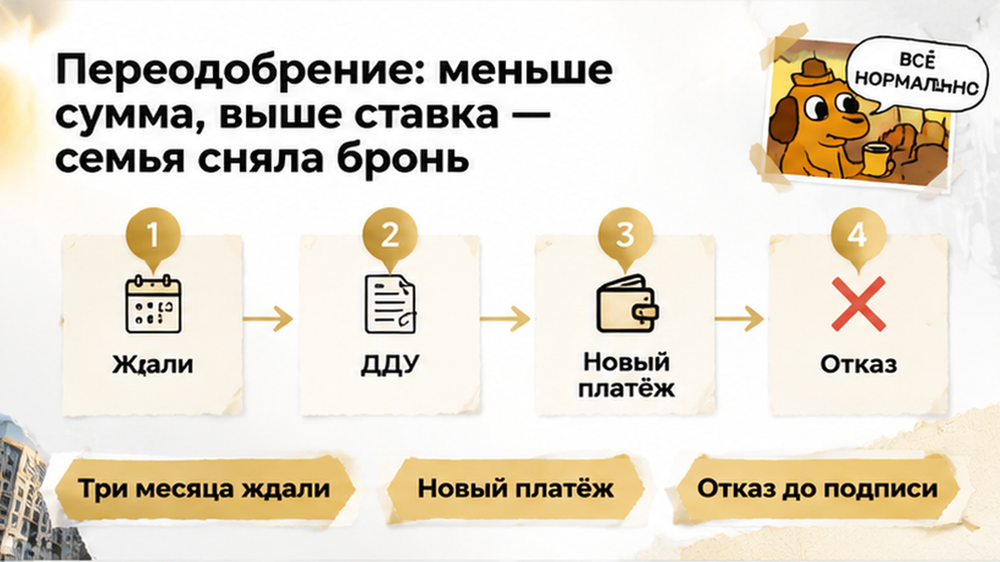

На 87-й день ожидания ДДУ семья в Тюмени получила проект договора, но купить квартиру по прежнему расчёту уже не могла: старое одобрение ипотеки банк закрыл. Квартира стояла в брони, первоначальный взнос был посчитан, ежемесячный платёж — примерен к семейному бюджету. В переписке с менеджером оставались три обещания подготовить договор «на следующей неделе». В тот вечер рядом оказались два разных ответа: застройщик наконец прислал файл, а статус банковского решения уже не позволял двигаться дальше на прежних условиях. Между «квартира за вами» и «можно выходить на сделку» обнаружилась разница, которой в первоначальном расчёте не было.
Я — Святослав Шакин, The Риэлтор, Тюмень. Расскажу изнутри, где ожидание договора начинает обходиться покупателю слишком дорого. В Telegram разбираю покупки новостроек без рекламных обещаний, а материалы дублирую в MAX.
Началось всё вполне спокойно: семья выбрала квартиру у застройщика и оформила бронь. Банк дал предварительное одобрение с возможной суммой кредита, ставкой и примерным платежом. Для покупателей это уже были не отвлечённые цифры из рекламы, а понятный ответ: сколько своих денег понадобится и сколько потом отдавать каждый месяц.
Вот здесь обычный покупатель и человек, который ведёт сделку, слышат немного разное. Покупатель слышит: «Ипотеку одобрили, теперь ждём договор». Я в такой точке смотрю ещё и на срок решения: успеем ли получить документы и выполнить требования банка, пока этот расчёт остаётся действующим? Это не недоверие к менеджеру, а вопрос, от которого зависит бюджет покупки.
ДДУ — договор на покупку квартиры в строящемся доме — застройщику ещё предстояло подготовить. Затем покупателям нужно было прочитать его, проверить условия и подписать, а самому договору — пройти регистрацию. Предварительное «да» от банка не заменяет ни одного из этих действий и само по себе не означает, что кредит уже выдан.
Бронь тоже решает свою задачу, а не банковскую. Её срок, оплата и условия отказа записаны в отдельном договоре с застройщиком; первоначальным взносом по ипотеке она от этого не становится. Поэтому квартира может оставаться забронированной, а времени на покупку по согласованному расчёту — становиться всё меньше.
Первое обещание звучало привычно: проект подготовят на следующей неделе. Потом срок сдвинулся, и та же фраза появилась ещё дважды. В переписке менеджер отвечал, но конкретной даты подписания так и не возникло. Получалось странное ожидание: связь есть, квартира выбрана, а день, к которому надо готовиться, назвать никто не может.
Одну такую отсрочку легко принять за рабочую заминку. Не передумали же продавать квартиру, просто документы пока не готовы. Но следующая неделя застройщика не прибавляет неделю к банковскому решению: у банка идёт свой отсчёт, даже когда покупателю больше нечего делать, кроме как ждать ответа.
И здесь опасно успокаивать себя привычным «одобрение примерно на 90 дней». Такой ориентир встречается, но общего срока для всех банков и программ нет. Нужна дата именно своего решения — из личного кабинета, документа или письма ипотечного менеджера. Слово «примерно» для семейного бюджета слишком ненадёжная опора.
Объявлять застройщика виноватым только по этим переносам тоже нельзя: надо смотреть, что он обещал по договору брони и в переписке. Но для покупателя отсутствие точной даты уже повод соединить два разговора — с застройщиком о готовности ДДУ и с банком о запасе времени. Иначе каждый отвечает за свой участок, а семья остаётся ждать между ними.
В тот вечер семья наконец получила файл, которого ждала почти три месяца. Проект ДДУ передали на проверку и одновременно посмотрели статус ипотеки: можно ли двигаться дальше на прежних условиях? В личном кабинете старое решение уже было закрыто, и банк это подтвердил. Договор появился, а рассчитывать покупку по прежним цифрам больше было нельзя.
Вот здесь обычный покупатель и человек, который ведёт сделку, смотрят на разные вещи. Для семьи полученный договор — конец ожидания: теперь наконец можно покупать. Для меня — документ, после которого ещё предстоят согласование, подпись, регистрация и действия банка. Сам по себе файл не сохраняет ставку и не обязывает банк выдать сумму из старого расчёта.
Привычное «одобрение действует около 90 дней» здесь не помогло. У разных банков и программ сроки отличаются, поэтому ориентир с рынка нельзя подставлять вместо даты в собственном решении. Иначе кажется, что несколько дней ещё есть, хотя банк уже закончил отсчёт. Смотреть нужно не на круглое число, которое запомнилось из разговора, а на письменные условия.
На этом этапе ДДУ ещё не подписали, эскроу не открывали, деньги на него не переводили. Это важно: речь не о пропавшем платеже и не о деньгах, застрявших на счёте. Семья получила возможность проверить договор, но возможность купить квартиру за ранее рассчитанный ежемесячный платёж пришлось выяснять заново.
Банк начал переодобрение, и это оказалось не простым продлением даты. При новом рассмотрении он снова оценивает доход, другие кредиты, состав заёмщиков, квартиру и условия программы. Поэтому прежнее «да» не обещает такого же ответа сейчас. Повторная заявка может пройти на прежних условиях, но автоматически они не сохраняются.
В новом решении доступная сумма кредита стала меньше, а ставка — выше. Для семьи это означало вполне бытовую развилку: искать дополнительные деньги на покупку или соглашаться на более тяжёлый ежемесячный платёж. Первоначальный взнос и расходы дома уже считали под другой вариант. Теперь нужно было решать не «нравится ли нам квартира», а «можем ли мы её покупать с таким кредитом».

Здесь легко начать торопиться именно потому, что долго ждали. Квартира выбрана, переписка тянется месяцами, договор наконец прислали — жалко останавливаться перед подписью. Но потраченное время не делает новый платёж посильным. Я бы разделял эти вещи: досада от ожидания остаётся досадой, а бюджет нужно считать по сегодняшнему предложению банка.
С возвратом оплаты брони тоже нельзя обещать результат по одному слову «отказались». Для этого надо читать договор: за что внесены деньги, на какой срок закрепляли квартиру и что предусмотрено при прекращении брони. Здесь семья не подписала ДДУ на ухудшившихся условиях, сняла бронь до аванса, эскроу так и не открыли.
Очередь на ДДУ затянулась почти на три месяца, и старое одобрение закончилось на 87-й день. Кто должен был первым контролировать срок: застройщик, брокер или сама семья, которая ждала договор?
Покупатель ждёт сообщение: «Договор готов». А я смотрю, сколько времени останется после этого сообщения: документ ещё надо прочитать, согласовать и подписать. Поэтому «на следующей неделе» для расчёта сделки не подходит — нужна дата, которую можно сопоставить с ответом банка.
| Что проверить | Где смотреть | Что уточнить |
|---|---|---|
| Срок одобрения | Решение банка, личный кабинет, письмо менеджера | До какой даты действует решение и что нужно успеть |
| Продление | У ипотечного менеджера | Понадобится ли новая заявка, могут ли измениться условия |
| Подготовку ДДУ | В переписке с застройщиком | Когда передадут проект и когда возможно подписание |
| Условия брони | В договоре бронирования | Срок, оплату и порядок возврата при отказе |
| Расчёт покупки | В решении банка и расчёте сделки | Хватает ли кредита и своих денег перед авансом |
Если срок поджимает, ждать готового ДДУ для разговора с банком не нужно. Можно заранее выяснить, доступно ли продление и потребуется ли заново подтверждать доход. Ответ «попробуем переодобрить» не равен обещанию сохранить ставку, а письменная дата от застройщика не продлевает банковское решение.
И деньги здесь тоже разные: платёж за бронь — не первоначальный взнос, а условия выхода из брони надо читать в её договоре. Нельзя заранее обещать ни полный возврат, ни обязательную потерю этой суммы. В разборе о семейной ипотеке на новостройку и неоткрытом эскроу отдельно показано, почему банковское «да» ещё не означает, что покупка состоялась.
В Telegram и MAX рассказываю изнутри, где тормозятся покупки новостроек в Тюмени. Не только про ставку на витрине — про договор, сроки и деньги, с которыми семье потом жить. Подписывайтесь, если хотите понимать сделку до подписи.
«Квартира за нами» звучит почти как «мы её купили». Но бронь касается квартиры, одобрение — готовности банка дать кредит на определённых условиях, а эскроу — отдельного счёта для денег по ДДУ. Эти вещи связаны, только одна не заменяет другую: менеджер может продолжать держать квартиру, пока банковские условия уже требуют новой проверки.
Не стоит и любую остановку объяснять одним просроченным решением. В другой тюменской истории сделку остановил выросший перед ДДУ платёж. При смене юридического лица застройщика и замене договора проверять приходится уже документы другой стороны. А запись в ЕГРН может остановить регистрацию даже после одобрения ипотеки.
Самое тяжёлое после долгого ожидания — разрешить себе не соглашаться. Квартиру уже выбрали, бюджет обсуждали, почти три месяца ждали не зря же. Но потраченное время не делает новый платёж посильным: у семьи остаётся право оценить сегодняшние условия, а не держаться за вчерашний расчёт.
До аванса ещё можно поставить сделку на паузу. Это не вернёт недели ожидания и не гарантирует прежнюю ставку, зато позволит разобраться без нового денежного обязательства. Я за то, чтобы подключаться именно здесь — до брони и передачи денег, когда договор и расчёт ещё можно спокойно проверить, а от неподходящих условий отказаться.